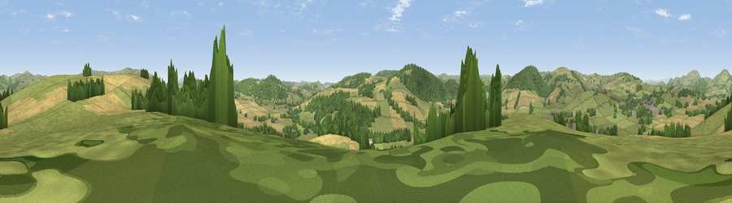

Viewpoint near Lydbury North
#16655 in England · top 53% of its area beats it · near Lydbury NorthThe view, rendered

A 360° render of this exact spot computed from the terrain model, tree cover and land cover — summer colours, afternoon light, calibrated against photographs of famous viewpoints. Real trees, hedges and buildings will differ in detail.
The panorama
Grey silhouette: terrain skyline in each direction (720 bearings, Earth curvature and refraction included). Dashed green: skyline with trees (+15 m) and buildings (+8 m) as obstacles. Blue strip: how far the ground is visible on each bearing.
Where the view opens
Wedge length = distance to the farthest visible ground on that bearing (vegetation-aware). Rings at 10, 25 and 50 km.
What fills the view
49% grassland · 27% cropland · 23% woodland · 1% built-up
Angular shares of the visible panorama (visual magnitude), not map area. Landscape diversity 0.48 (0–1 Shannon).
Key numbers
More beautiful places nearby
The staircase of upgrades: each row has a higher view potential than everything closer. Driving times are estimates from straight-line distance, calibrated against real road routing — check an actual route before setting out.
| Place | Direction | Drive | Score |
|---|---|---|---|
| Viewpoint near Lydbury North | ENE · 1 km | ~3 min | 59.9 |
| Viewpoint near Bishop's Castle | NW · 3 km | ~8 min | 60.7 |
| Viewpoint near Brockton | SSW · 3 km | ~8 min | 74.9 |
| Viewpoint near Asterton | ENE · 6 km | ~12 min | 83.0 |
| The Lawley | NE · 19 km | ~32 min | 85.8 |
| Viewpoint near Little Wenlock | NE · 35 km | ~54 min | 86.6 |
| North Hill | SE · 59 km | ~81 min | 86.8 |
| Worcestershire Beacon | SE · 60 km | ~82 min | 87.1 |
52.47625, -2.97278 · source: screening · position refined by local search. Computed location — check access rights before visiting.